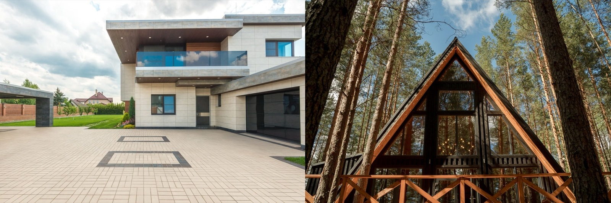

Concrete vs Wood House
The oldest building debate — the tropics' concrete-and-rebar default versus North America's wood stick-frame. In a hot, humid, termite-and-hurricane climate, one of them is a much easier life.

Walk through a neighborhood in Panama and you'll see concrete; walk through one in the US and you'll see wood. That's not an accident — it's climate and economics. Reinforced concrete (block or poured) and wood stick-frame are the two dominant ways to build a house, and the right one depends heavily on where you're building.
The quick verdict
In a hot, humid, termite-heavy, hurricane-and-earthquake climate like Panama or Costa Rica, concrete wins for most homes — it ignores termites, doesn't burn, and shrugs off storms. Wood is faster, cheaper, warmer, and easier to insulate where labor is expensive and the climate is milder (i.e. North America), but it fights the tropics.The head-to-head
| Factor | Concrete (block/poured) | Wood frame |
|---|---|---|
| Cost | 🟡 Higher material + labor | 🟢 Cheaper & faster where wood is cheap |
| Build speed | 🟡 Slower (cure time) | 🟢 Fast to frame |
| Termites | 🟢 Immune | 🔴 A prime target |
| Fire | 🟢 Doesn't burn | 🔴 Combustible |
| Hurricane / seismic | 🟢 Excellent (reinforced) | 🟡 Good if well-engineered |
| Moisture / rot | 🟢 Unaffected | 🔴 Rots if it stays wet |
| Insulation | 🟡 Needs added insulation | 🟢 Easy cavity insulation |
| Tropical fit | 🟢 The regional default for good reason | 🔴 Fights heat, damp, termites |
How they actually differ
Wood is light, fast, cheap (in timber-rich economies), and easy to insulate — which is why it dominates North America. Concrete is heavier, slower, and pricier to build, but it's inert: termites, rot, fire, and storms don't faze it. In the tropics that inertness is worth a great deal, because the climate is actively hostile to wood. The flip side is insulation — a bare concrete or block wall has none, which is why insulated concrete methods like ICF are such a good tropical upgrade.
Which should you choose?
- Choose concrete for a permanent home in the tropics — durability, storm and pest resistance, and financeability outweigh the higher build cost.
- Choose wood where timber is cheap, labor is expensive, the climate is temperate, and speed matters — or for specific warm, characterful designs.
- Best of both: insulated concrete (ICF) gives concrete's toughness and the insulation wood does easily.
…in the tropics specifically
This is why nearly every home SORA builds is reinforced concrete: in Panama and Costa Rica it's the proven, insurable, financeable choice that handles heat, humidity, termites, hurricanes, and earthquakes without drama. Wood has its place — beautiful accents, some highland cabins, bamboo as a sustainable structural option — but as the primary structure for a permanent tropical home, concrete is the pragmatic winner.
Not sure which is right for your build?
SORA is a fixed-price design-build platform for foreign buyers in Panama and Costa Rica. We spec the material and method that actually fit your site, climate, and budget — and tell you straight when the cheaper option is the smarter one.
See real 2026 build costs →Frequently asked questions
Is a concrete or wood house better in the tropics?
Concrete, for most permanent homes. It's immune to termites, doesn't burn, resists rot, and stands up to hurricanes and earthquakes — all things a hot, humid, storm-prone climate throws at a house. Wood is cheaper and faster where timber is inexpensive and the climate is mild, but it fights the tropics.
Is a concrete house more expensive than wood?
Usually to build, yes — concrete uses more material and labor and cures slowly. But in the tropics that upfront cost buys much lower losses to pests, fire, and storms over the building's life, plus easier insurance and financing, so the lifetime economics often favor concrete.
Do concrete houses stay cooler than wood ones?
A bare concrete or block wall has thermal mass but no insulation, so it can hold heat. Insulated concrete methods like ICF combine concrete's durability with continuous insulation, delivering cooler, steadier interiors than either an uninsulated block wall or a typical wood-frame house.
Sources & verification
Figures in this guide were checked against primary and authoritative sources on 27 July 2026. Immigration, tax, and cost figures change — always confirm the current rules with the official body or a licensed professional before acting.